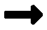

Contains a synonym. The synonym inside is its joey.
Back to Index CatalogueContains both a synonym and an antonym. The two joeys are antonyms with each other.
Back to Index CatalogueThe most special of them all. King of Kangaroos. Contains a synonym within a synonym. The second joey is inside the first joey. Not to be confused with Twin Joeys,which are individual of each other.
Back to Index Catalogue